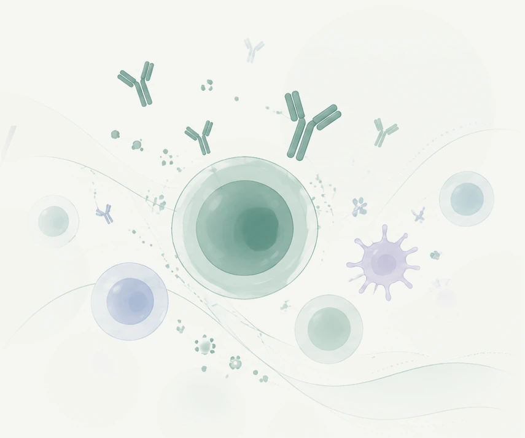

Tissue-resident immune memory
We investigate how immune memory is established and maintained in barrier tissues, with a particular interest in tissue-resident B cells and their rapid responses to local reinfection.
Discover the program →LABORATORY OF SKIN & MUCOSAL IMMUNOLOGY
We investigate how humoral immunity is established, maintained and recalled in tissues during infection, vaccination, and across diverse disease settings.

Our lab asks a simple question with broad implications:
RESEARCH
We investigate how immune memory is established and maintained in barrier tissues, with a particular interest in tissue-resident B cells and their rapid responses to local reinfection.
Discover the program →We investigate the cell-intrinsic programs that shape the fate and function of tissue-resident memory B cells, with a focus on transcriptional and metabolic regulation.
Discover the program →We investigate how distinct tissue microenvironments shape the establishment, maintenance, and quality of tissue-resident immune memory, and why protective B cell memory develops more effectively in some tissues than in others.
Discover the program →FEATURED QUESTION
Tissue residency is more than location. We investigate the molecular programs and local signals that create specialized B cell populations poised for rapid protection.
See our workPEOPLE
Led by JI EUN OH, M.D., Ph.D., the OH Lab is based in the Graduate School of Medical Science & Engineering at KAIST in Daejeon, Korea.
Meet the team →SELECTED WORK
LAB LIFE
Heeyeon received the Outstanding Poster Award at the Korean Association of Immunologists Spring Meeting. Congrats!
Jin Kyum was awarded at the Lab Note Contest supported by Samsung Bioepis. Congrats!
Eunsong started her Ph.D. graduate program.
JOIN THE OH LAB
We welcome motivated students and postdoctoral researchers interested in B cell biology, tissue immunity and host defense.
Get in touch